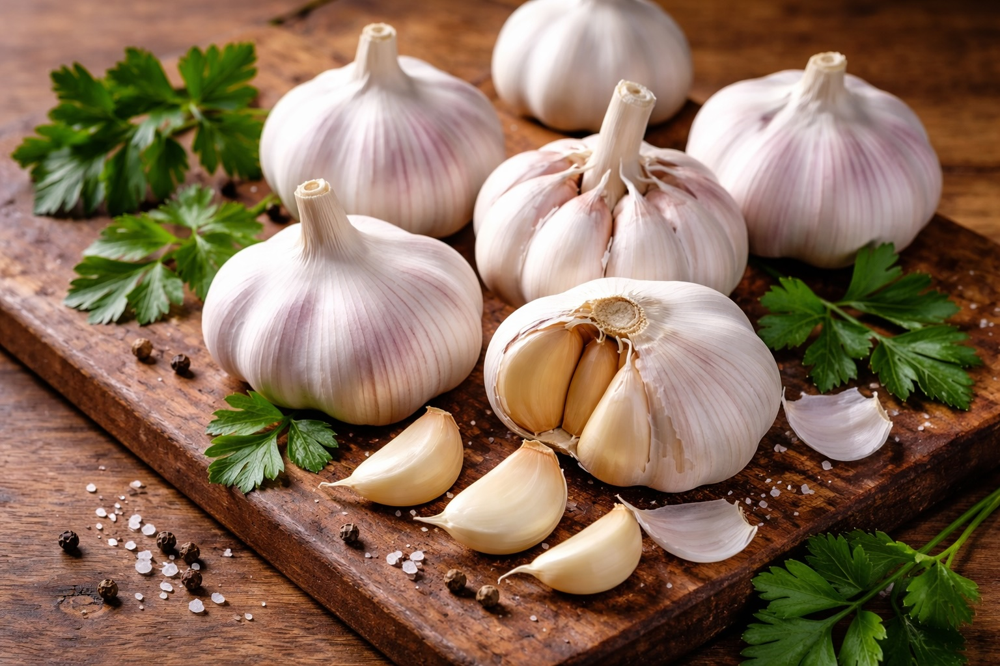

Superfoods: Garlic
Last updated: March 20, 2026

- Garlic builds flavor naturally: it reduces the need for processed sauces and flavor enhancers.
- Fresh garlic is the strongest default choice: it gives better flavor, more control, and fewer hidden ingredients than jarred versions.
- One bulb goes a long way: garlic is inexpensive, versatile, and useful across soups, rice dishes, protein cooking, and sauces.
- Storage matters: knowing how to store bulbs, peeled cloves, and minced garlic helps reduce waste and improve consistency.
Purpose: Garlic is one of the most practical and foundational ingredients in a whole-food kitchen. It improves flavor, supports ingredient awareness, and helps turn simple meals into meals that feel complete without relying on processed shortcuts.
Why garlic matters
Garlic is used across cultures because it creates flavor quickly and naturally. A small amount can change a dish from flat to balanced. It works well in soups, rice dishes, proteins, sauces, and stews, making it one of the highest-value ingredients for everyday cooking.
Garlic is also useful because it supports a broader kitchen philosophy: use real ingredients directly instead of relying on packaged products designed to imitate the same effect.
Nutritional value
Garlic contains sulfur compounds and antioxidants that have long been associated with immune, cardiovascular, and general wellness support. Its value comes not only from those compounds, but from how often it can be used in real meals. The most practical benefit is regular use, not extreme use.
Flavor impact
Garlic adds warmth, depth, and aromatic character. Used well, it strengthens the base of a dish without overpowering it. Used poorly, especially when burned, it can turn bitter quickly. That is why moderate heat and timing matter.
Garlic pairs naturally with olive oil, lemon, onion, herbs, butter, and proteins. It is one of the easiest ways to improve food while staying aligned with a whole-ingredient kitchen.
Clove vs. bulb
A bulb is the full head of garlic. A clove is one individual segment inside that bulb. This matters because recipes often call for cloves, not bulbs, and confusion here can dramatically change the strength of a dish.
- 1 bulb usually contains multiple cloves, often 8 to 15 depending on size and variety.
- 1 clove is enough to lightly season a small dish.
- 2 to 4 cloves is a common range for soups, sautés, rice dishes, and protein meals.
As a practical rule, start smaller and build up. Garlic is easy to add more of next time, but hard to remove once it dominates a dish.
Fresh garlic vs. garlic powder
Fresh garlic
Fresh garlic is the best overall choice for flavor, versatility, and ingredient quality. It gives a more complete aroma and a stronger sense of freshness in the dish.
- Best for: soups, sautéed dishes, sauces, proteins, rice dishes, flavor bases
- Pros: stronger flavor, better texture control, no added anti-caking agents or fillers
- Cons: requires peeling and chopping, shorter shelf life once prepared
Garlic powder
Garlic powder has a place, but it is not a full replacement for fresh garlic. It is best thought of as a backup or a secondary flavor layer.
- Best for: dry rubs, quick seasoning mixes, roasted vegetables, and situations where fresh garlic texture is not desired
- Pros: convenient, easy to distribute evenly, long shelf life
- Cons: less depth, less freshness, easier to overdo if used heavily
If only one form is kept in the kitchen, fresh garlic is the best choice. Garlic powder is useful, but it should support the system, not replace the real ingredient.
How to use garlic more often
Use garlic as part of the flavor base of cooking. Chop, mince, or crush it before cooking. Add it to oil over moderate heat, often after onions have started softening or shortly before a liquid or main ingredient is added. This helps release aroma without burning it.
For everyday cooking, garlic works especially well in simple meals where a few whole ingredients need extra help to feel complete.
Personal workflow and recipe examples
In my kitchen, garlic fits into the larger move away from artificial or overly processed ingredients and toward repeatable systems. I do not use it as a special “health” ingredient. I use it as a practical daily tool.
- Chaufa: garlic adds depth to the oil, eggs, rice, and reheated protein without making the dish more complicated.
- Chicken soup: garlic strengthens the base and will pair even better once homemade stock becomes part of the process.
- Lentil soup: garlic works naturally with onion and lentils and helps the soup feel fuller and more complete.
- Batch-cooked chicken or turkey: garlic fits well in a simple finishing layer with olive oil, lemon, and salt.
- Seco de res: garlic belongs naturally in the aromatic base that builds the dish.
That is the real advantage. Garlic supports meals that are already part of the weekly rhythm, which makes it easier to stay consistent with whole ingredients.
Storage options
Whole bulbs
Whole garlic bulbs store best in a cool, dry, well-ventilated place outside the fridge. A pantry or open basket is better than a sealed bag. Stored this way, whole bulbs often last several weeks and sometimes longer depending on freshness when purchased.
Peeled cloves
Peeled cloves can be kept in the fridge in a sealed container for several days, but they should be used relatively quickly for best flavor and quality. Once garlic is peeled, it starts losing some of its freshness and becomes easier to spoil.
Minced or chopped garlic
Freshly minced garlic is best used the same day, but it can hold in the fridge for a short period in a sealed container. For meal prep, freezing is usually the better option than letting minced garlic sit too long in the refrigerator.
Freezer storage
Garlic can be frozen if needed. Peeled cloves, chopped garlic, or small garlic portions frozen in oil-free containers can help reduce waste and save time. Frozen garlic is still useful for cooked dishes even if texture softens after thawing.
How long garlic lasts
- Whole bulb in pantry: often several weeks when kept cool, dry, and ventilated
- Peeled cloves in fridge: roughly up to a week for best quality
- Fresh chopped garlic in fridge: best used within a few days
- Frozen garlic: can last much longer and works well for cooked recipes
The main principle is simple: the more garlic is processed ahead of time, the shorter its ideal fridge life. Whole bulbs last the longest. Freshly prepared garlic gives the best flavor but should be used faster.
Whole food advantage
Many processed sauces and marinades attempt to recreate the depth and aroma that garlic gives naturally. Using real garlic directly helps reduce dependence on bottled products that often bring preservatives, added sugars, lower-quality oils, or flavor systems you would not make at home.
Final thoughts
Garlic deserves its place as a superfood not because it is trendy, but because it is useful. It improves everyday food, fits naturally into a simple kitchen system, and helps replace hidden complexity with a real ingredient you understand.
In a whole-food kitchen, garlic is not an extra. It is part of the foundation.
Next steps
Continue with other Superfoods articles.
This article focuses on general food quality and practical cooking, not medical advice.